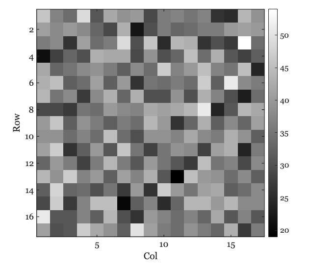

16 Sensor parameters
This is a draft version of Foundations of Image Systems Engineering. Content is actively evolving. Please send comments or corrections via GitHub Issues.
Last updated: September 9, 2025
16.1 Sensor parameters
Simulations of the CMOS circuitry can -and do- become very complex during the design phase. Engineers use specialized software that incorporates the foundry’s design rules that account for material properties and feature sizes. This design software helps circuit designers achieve a working system from the foundry.
After the chip is built, it is impractical to characterize each different line, device and junction. Designers may place certain test circuits within the chip. But more generally systems are evaluated with respect to a set of objective measurements using images as input and digital values of output. This process is called called system characterization or system calibration. The characterization measurements specify the limitations of system performance, including light sensitivity, system noise, dynamic range, and color accuracy.
The ability to improve a system requires that we have parameters that are practical to measure and insightful about potential system imperfections. The parameters described in this section are designed to characterize key system limitations based on knowledge of the pixel, sensor, and circuit properties. Certain fundamental parameters will remain the same, even as structures and circuits evolve. This section first introduces the fundamental parameters that should apply to pixels and sensors across all technologies. The next section introduces the limitations and noise associated with each of these types of parameters.
With the new advances in circuits and algorithms, new parameters and noise analyses will be needed. The parameters introduced here are fundamental, and I expect they will be an important part of image systems engineering for a long time.
16.2 Pixel sensitivity and fill factor
Because modern pixels are so small, each photodiode often collects only a modest number of photons—even under good lighting. For example, a \(1~\mu\text{m}^2\) pixel in a dim scene (with a fast f/2 lens) might receive just 200 photons during an exposure. Photon arrivals follow Poisson statistics, so the standard deviation is \(\sqrt{200} \approx 14\), or about 7% of the mean. This photon noise is a fundamental limit: it sets the minimum possible noise level and constrains the signal-to-noise ratio (SNR) in low-light conditions.
The photodiode occupies only a portion of the pixel area; some of the pixel area is taken up by the circuitry. The proportion of the pixel area that is sensitive to light—the photodiode area—further limits light sensitivity. This proportion is called the fill factor. A higher fill factor means more of the pixel is used to detect light, increasing sensitivity. Fill factor is usually expressed as a value between 0 and 1, or as a percentage between 0% and 100%. The first-generation of CMOS image sensors were built with semiconductor technology with feature size on the order of 350 nm, and thus the circuitry might occupy as much as half of the pixel area (fill factor of 0.5). Over years the feature size has shrunk considerably and the fill factor of modern pixels can be greater than 0.9. The fill factor combined with the light sensitivity of the photodiode might result in about 150 electrons generated from the 200 photons. This number, too, is Poisson distributed so the short noise will be about \(\sqrt{150} \approx 14\), about 8% of the mean.
The number of photons arriving at a pixel depends on many factors, including the light intensity, the optics, and the size of the pixel. ISETCam is a useful tool for estimating quantities such as the number of incident photons. The variance in the number of photons at a \(1~\mu\text{m}^2\) pixel under moderate to dim lighting is considerable. Here is an image calculated using ISETCam, showing the Poisson variation in the number of photons across a small region.
.
This ISETCam script illustrates the calculation. Nearly every sensor simulation we run in ISETCam includes calculations like this.
16.3 Well capacity and dynamic range
The photodiode and floating diffusion node in each pixel act as charge storage devices, often referred to as storage wells. The maximum number of electrons that can be stored in these wells is called the well capacity or full-well capacity. When the number of photo-generated electrons exceeds this capacity, any additional electrons cannot be stored, and the pixel output no longer increases with light intensity. Well capacity is therefore a key factor in determining the pixel’s dynamic range and the point at which it stops responding to additional light.
The dynamic range of a pixel is defined as the ratio between the largest and smallest amounts of light that can be reliably measured. Specifically, we measure the minimum detectable light level (\(L_{min}\)) and the maximum light level (\(L_{max}\)) that fills the well just below saturation. The dynamic range is then calculated as:
\[ \text{DR} = 20~\log_{10}\left(\frac{L_{max}}{L_{min}}\right) \]
The logarithm compresses the range into more manageable numbers, typically between 60 and 100. The factor of 20 comes from conventions in audio engineering, where dynamic range is measured in decibels (dB). Image scientists use the same convention, so dynamic range is usually reported in dB.
16.4 Pixel response curve
The finite well capacity can also have an impact on how the response increases with intensity. Figure 16.1 shows an estimate of the number of stored electrons as a function of number of incident photons for a real sensor. The number of stored electrons increases linearly over a large part of the range. Beyond a certain level, as we approach the storage limit, the curve starts to saturate. As the light intensity increases even further, the curve completely flattens at the well capacity, in this example about 70,000 electrons.
This pattern can be understood in terms of the physics. At low and moderate light levels, nearly all photo-generated electrons are successfully stored in the well. The photoelectric effect is linear and thus there is a linear increase in stored charge with increasing light intensity.
As the well nears its full capacity, several effects cause the response to become sublinear and eventually saturate. First, when the storage well is almost full, some newly generated electrons cannot be stored and may leak out or recombine, reducing the efficiency of charge collection. Second, some electrons generated by photons may diffuse into neighboring regions of the sensor substrate rather than being stored in the intended circuit element (e.g., floating diffusion noise). Both leakage and diffusion become more significant at higher light intensities, causing the response curve to flatten out as it approaches saturation.
The exact onset and severity of this nonlinearity depend on the specific circuit design and material properties of the sensor. In certain designs the nonlinearity is negligible, with only some degree of nonlinearity as the well capacity is approached. Understanding the response curve is important for accurately interpreting sensor measurements, especially in applications that require high dynamic range or precise quantitative imaging.
16.5 Pixel gain
The electrons in the floating diffusion node create a voltage that is read out. The size of the voltage depends on the capacitance of the node. The quantity that relates the voltage per electron is called the conversion gain, \(CG\). It specifies how much the voltage changes for a given change in charge.
\[ CG = \frac{\Delta V}{\Delta Q} \tag{16.1}\]
The units of conversion gain are volts per electron. Thus, if we store 100 electrons in the diffusion node, the readout voltage will be \(100 \times CG\).
Furthermore, recall that the capacitor voltage depends is proportional to the number of electrons it holds divided by its capacitance (farads). Thus, \(\Delta V = \Delta Q / C\) were \(C\) is capacitance in farads.
\[ CG = 1 / C \tag{16.2}\]
In film photography, light sensitivity was controlled by the film chemistry. The sensitivity was specified by a variable called its speed, and an international standard, ISO speed, was created to measure this sensitivity.
Digital sensors control their relative sensitivity by circuitry that modulates the conversion gain. One widely used approach, dual conversion gain, adjusts the floating diffusion node capacitance. This is implemented using a switchable capacitor that can be connected, or not, to the node. The connection is controlled by a switchable transistor signal. In low conversion gain (LCG) mode, the capacitor is connected to the floating diffusion node; this increases the total capacitance and lowers the conversion gain (Equation 16.2). In high conversion gain (HCG) mode, the capacitor is disconnected; this reduces the total capacitance and increases the conversion gain.
The LCG mode is used under normal or bright scene illumination. The HCG is useful when the scene is dark and there are relatively few photon generated electrons. The well capacity varies between these modes, so that the dynamic range of the sensor is reduced when it is in HCG mode. Of course, once an engineer builds a system with dual conversion modes you can expect another engineer to build a system with four or eight nodes (multi-capacitor gain switching).
The dual conversion gain method is a true sensitivity adjustment: the conversion gain genuinely changes and the signal-to-noise of the sensor increases, while the well capacity decreases.
Commercial vendors use other methods to approximate ISO speed. In one approach, after the charge is converted to a voltage the signal is amplified by an analog amplifier prior to ADC. This approach amplifies both the signal and noise. Its value is that in low light conditions the output spans the full bit depth.
In desperate times, some vendors simply scale the digital values. In this case the rendered image will be brighter because the digital values span the full range. But the approach isn’t great - it amplifies signal, noise, and quantization artifacts.
16.6 Pixel noise
All real systems have the potential for imperfections. Eliminating these imperfections is a fundamental goal of engineering, and image systems are no exception.
If we acquire the same image repeatedly, even with no change in the scene, there will be fluctuations in a pixel’s output. The difference in a pixel’s output across time is called temporal noise. There are several contributors to this variation. We have already reviewed one important contributor, the Poisson distribution of the electrons at the photodiode (Section Section 14.6). Each of the different components of the pixel are potential sources of temporal noise. Here is a list.
16.6.1 Reset noise and correlated double sampling
In the 3T and 4T circuits, we must transfer the electrons from the photodiode (in 3T) or from the floating diffusion node (in 4T). In both cases, there is the possibility that as we start to collect the electrons there will be a random number of electrons left over from the prior image capture. This variable number of unwanted electrons is a failure to reset the storage to exactly the same state, thus it is called reset noise.
This noise is present in both 3T and 4T circuits, but it has different properties because the storage location differs (Section 15.4.2). An important feature of the 4T circuit is that the floating diffusion noise can be read just prior to transferring the electrons from the photodiode, and then again after electrons have been transferred. The difference is read out as the pixel value. This process is called correlated double sampling (CDS), and it significantly reduces reset noise.
In a 3T pixel, reading the voltage on the photodiode disturbs the accumulated charge. CDS relies on making two non-destructive measurements, which is not possible on the photodiode itself in the 3T circuit.
Reset noise is also known as \(kTC\) noise because its size depends on a formula related to the capacitance of the floating diffusion node. The most common representation of the noise is with respect to the pixel voltage.
\[ {\sigma_V}^2 = \frac{kT}{C} \tag{16.3}\]
The units of these parameters are:
- \(k\) - Boltzmann constant - Joules per Kelvin
- \(T\) - Temperature - Kelvin
- \(C\) - Capacitance Farads = Coulombs per volt
The formula above shows that reset noise increases with temperature (\(T\)). As a result, sensors in colder environments (such as ski slopes) experience less reset noise than those in warmer settings (like beaches in summer). To address this, many cameras use temperature sensors and adjust their image processing to compensate for temperature-dependent noise, helping to maintain consistent image quality in different conditions.
In the 4T pixel, the circuit first measures the voltage on the floating diffusion node before transferring charge from the photodiode (capturing a baseline), and then again after the charge is transferred. The difference between these two measurements represents the pixel signal. This subtraction cancels much of the reset noise, improving signal-to-noise ratio.
The 4T design is now standard due to its superior noise performance. Further innovations, such as dual conversion gain and stacked pixel structures have also expanded the dynamic range of CMOS sensors. We will explore some of these developments in Chapter 20.
The reset noise formula in Equation 16.3 gives the noise variance in units of volts. However, it is often more useful to express reset noise in terms of the number of electrons. The equivalent formula for the variance in charge is
\[ {\sigma_Q}^2 = k T C \tag{16.4}\]
Here, \({\sigma_Q}\) is in Coulombs. To convert this to electrons, divide by the elementary charge (\(1.602 \times 10^{-19}\) Coulombs per electron):
\[ \sigma_e \approx \frac{\sqrt{k T C}}{1.602 \times 10^{-19}} \]
Reset noise is typically modeled as a Gaussian distribution with zero mean and standard deviation \(\sigma_e\) electrons.
16.6.2 Dark current
Even in the absence of light, electrons are generated within the semiconductor material. These electrons make up the dark current. The size of the dark current depends on factors such as the temperature and the bandgap of the material. The number of accumulated dark electrons increases over time.
Dark electrons accumulate in the same storage as photon-generated electrons and are indistinguishable from them in the readout. But the dark electrons are not informative about the scene; in fact, they interfere with inferences one would make about the scene.
There is a relatively large impact of temperature on dark current \(I_d\). The scaling of the current with temperature is specified by this standard formula:
\[ I_d(T) \propto T^3 e^{-E_g/kT} \tag{16.5}\]
We can convert the dark current (in \(C/s\)) to a rate of electrons per second by dividing by the elementary charge (\(1.602 \times 10^{-19}~C/e^-\)). The symbol \(C\) is Coulombs. The number of dark electrons is random and follows a Poisson distribution with a mean equal to the expected number of dark electrons for the exposure time.
The dark current level depends on multiple features of the circuit and is hard to predict from first principles. The dark current level is usually determined empirically and reported in the data sheets describing the sensor.
A data sheet for a (discontinued) ON Semiconductor sensor specifies a dark current of \(78~e^{-}/\text{s}\) at \(T = 21^\circ\text{C} = 294.15~\text{K}\). If we take a picture with a 0.03 second exposure, we expect an average of \(2.34\) dark electrons per pixel. If the temperature rises by \(30\) Kelvin, to \(324.15~\text{K}\), the mean number of dark electrons increases to \(3.13\). The number of dark electrons is Poisson distributed, so the variance equals the mean.
16.6.3 Temperature effects
The sections on reset noise and dark current were two examples of how noise depends on temperature. CMOS image sensors are sensitive to temperature in other ways as well, because many of their key physical processes depend on thermal energy. Here is a summary of the factors that change as temperature rises:
- Dark current increases exponentially, adding background signal and noise even in the absence of light.
- Reset noise (kTC noise) grows linearly with temperature, especially affecting sensors without correlated double sampling.
- Analog circuit offsets and gain can drift, altering pixel output levels and introducing fixed-pattern noise.
- Leakage currents and charge transfer inefficiencies rise, degrading low-light performance and introducing artifacts.
Together, these effects cause image quality to degrade—particularly in precision applications like scientific imaging or long exposures. To mitigate these issues, sensors often include:
- Real-time temperature sensors
- Calibration tables for dark current, gain, and noise
- Active cooling systems
- Post-processing corrections such as dark-frame subtraction and flat-field normalization
Temperature compensation by cooling helps maintain consistent signal-to-noise ratio, dynamic range, and color accuracy across operating conditions. If cooling is not possible, knowledge of how noise depends on temperature is important when processing and interpreting camera data.
16.7 Array noise
The discussion so far has focused on the properties of CMOS imagers at the level of individual pixels. When manufacturing an array comprising millions of pixels, there will be minor differences between the pixels in the array. For example, the area of the photodiode might differ, or the capacitance of the floating diffusion node, or perhaps the material doping concentration. Although modern foundries achieve remarkable uniformity, some variation is inevitable.
These are variations between pixels and are often referred to as sensor noise. Some of the sensor variations do not change over time; for example, the relative photodiode area of different pixels. These variations across the sensor are called fixed pattern noise (FPN).
16.7.1 Dark signal nonuniformity (DSNU)
Dark signal nonuniformity (DSNU) refers to the variation in the dark current across the pixels. Some pixels may accumulate dark current at slightly different rates. As a result, when we consider their response to increasing amounts of light, they will start at slightly different levels. This is illustrated in the variation of the starting positions at zero illumination level in Figure Figure 16.2. Recall that the pixel dark current depends on several factors, including temperature and exposure time (Section 16.6.2). Hence, the DSNU will also depend on these factors.
16.7.2 Photoresponse nonuniformity (PRNU)
The photoresponse nonuniformity (PRNU) refers to the variation in the slope (gain) of the pixel responses (Figure 16.2). There are various reasons why the response curve might differ between pixels. The photodiode area might be slightly larger in one pixel than another, or the effectiveness of the microlens at focusing the light on the photodiode might be slightly different. Also, the media, such as the color filter, may differ slightly between two pixels of the same type.